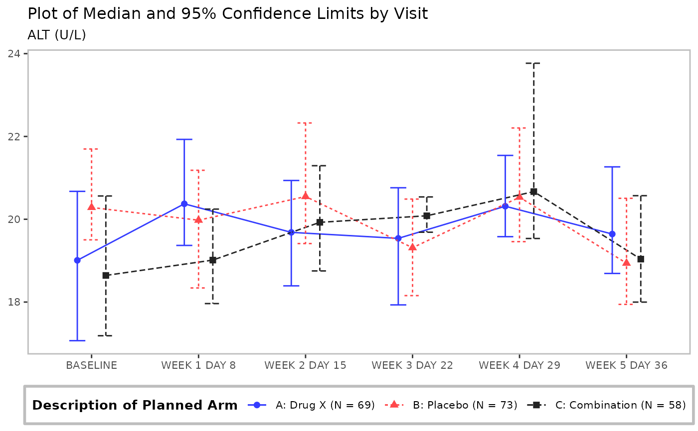
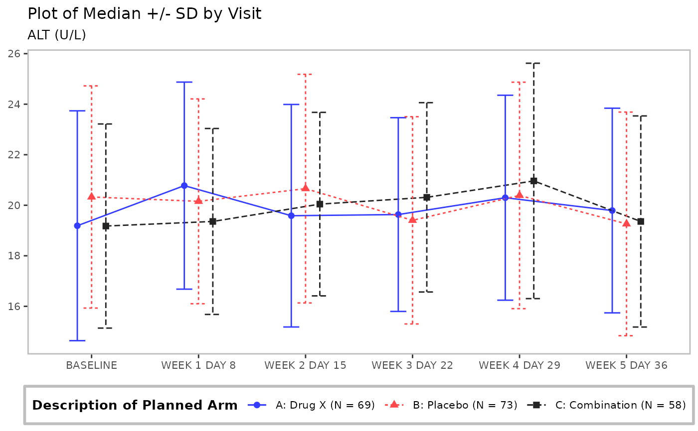
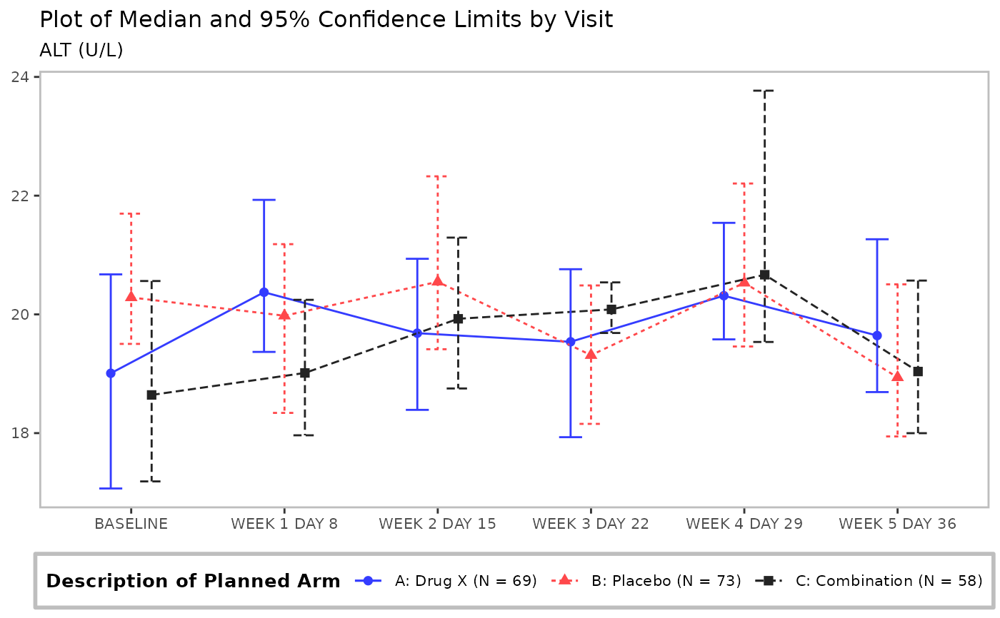
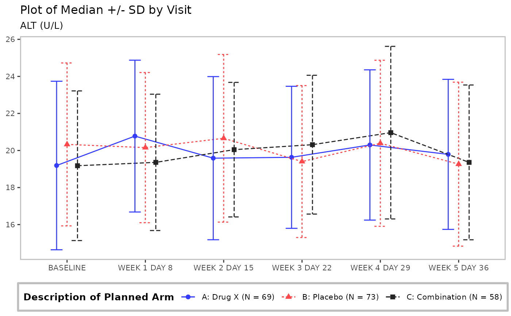

![[Stable]](figures/lifecycle-stable.svg)
Line plot with optional table.
Usage
g_lineplot(
df,
alt_counts_df = NULL,
variables = control_lineplot_vars(),
mid = "mean",
interval = "mean_ci",
whiskers = c("mean_ci_lwr", "mean_ci_upr"),
table = NULL,
sfun = s_summary,
...,
mid_type = "pl",
mid_point_size = 2,
position = ggplot2::position_dodge(width = 0.4),
legend_title = NULL,
legend_position = "bottom",
ggtheme = nestcolor::theme_nest(),
xticks = NULL,
xlim = NULL,
ylim = NULL,
x_lab = obj_label(df[[variables[["x"]]]]),
y_lab = NULL,
y_lab_add_paramcd = TRUE,
y_lab_add_unit = TRUE,
title = "Plot of Mean and 95% Confidence Limits by Visit",
subtitle = "",
subtitle_add_paramcd = TRUE,
subtitle_add_unit = TRUE,
caption = NULL,
table_format = NULL,
table_labels = NULL,
table_font_size = 3,
errorbar_width = 0.45,
newpage = lifecycle::deprecated(),
col = NULL,
linetype = NULL,
rel_height_plot = 0.5,
as_list = FALSE
)Arguments
- df
(
data.frame)
data set containing all analysis variables.- alt_counts_df
(
data.frameorNULL)
data set that will be used (only) to counts objects in groups for stratification.- variables
(named
character) vector of variable names indfwhich should include:x(string)
name of x-axis variable.y(string)
name of y-axis variable.group_var(stringorNULL)
name of grouping variable (or strata), i.e. treatment arm. Can beNAto indicate lack of groups.subject_var(stringorNULL)
name of subject variable. Only applies ifgroup_varis not NULL.paramcd(stringorNA)
name of the variable for parameter's code. Used for y-axis label and plot's subtitle. Can beNAifparamcdis not to be added to the y-axis label or subtitle.y_unit(stringorNA)
name of variable with units ofy. Used for y-axis label and plot's subtitle. Can beNAif y unit is not to be added to the y-axis label or subtitle.facet_var(stringorNA)
name of the secondary grouping variable used for plot faceting, i.e. treatment arm. Can beNAto indicate lack of groups.
- mid
(
characterorNULL)
names of the statistics that will be plotted as midpoints. All the statistics indicated inmidvariable must be present in the object returned bysfun, and be of adoubleornumerictype vector of length one.- interval
(
characterorNULL)
names of the statistics that will be plotted as intervals. All the statistics indicated inintervalvariable must be present in the object returned bysfun, and be of adoubleornumerictype vector of length two. Setinterval = NULLif intervals should not be added to the plot.- whiskers
(
character)
names of the interval whiskers that will be plotted. Names must match names of the list elementintervalthat will be returned bysfun(e.g.mean_ci_lwrelement ofsfun(x)[["mean_ci"]]). It is possible to specify one whisker only, or to suppress all whiskers by settinginterval = NULL.- table
(
characterorNULL)
names of the statistics that will be displayed in the table below the plot. All the statistics indicated intablevariable must be present in the object returned bysfun.- sfun
(
function)
the function to compute the values of required statistics. It must return a namedlistwith atomic vectors. The names of thelistelements refer to the names of the statistics and are used bymid,interval,table. It must be able to accept as input a vector with data for which statistics are computed.- ...
optional arguments to
sfun.- mid_type
(
string)
controls the type of themidplot, it can be point ("p"), line ("l"), or point and line ("pl").- mid_point_size
(
numeric(1))
font size of themidplot points.- position
(
characterorcall)
geom element position adjustment, either as a string, or the result of a call to a position adjustment function.- legend_title
(
string)
legend title.- legend_position
(
string)
the position of the plot legend ("none","left","right","bottom","top", or a two-element numeric vector).- ggtheme
(
theme)
a graphical theme as provided byggplot2to control styling of the plot.- xticks
(
numericorNULL)
numeric vector of tick positions or a single number with spacing between ticks on the x-axis, for use whenvariables$xis numeric. IfNULL(default),labeling::extended()is used to determine optimal tick positions on the x-axis. Ifvariables$xis not numeric, this argument is ignored.- xlim
(
numeric(2))
vector containing lower and upper limits for the x-axis, respectively. IfNULL(default), the default scale range is used.- ylim
(
numeric(2))
vector containing lower and upper limits for the y-axis, respectively. IfNULL(default), the default scale range is used.- x_lab
(
stringorNULL)
x-axis label. IfNULLthen no label will be added.- y_lab
(
stringorNULL)
y-axis label. IfNULLthen no label will be added.- y_lab_add_paramcd
(
flag)
whetherparamcd, i.e.unique(df[[variables["paramcd"]]])should be added to the y-axis label (y_lab).- y_lab_add_unit
(
flag)
whether y-axis unit, i.e.unique(df[[variables["y_unit"]]])should be added to the y-axis label (y_lab).- title
(
string)
plot title.- subtitle
(
string)
plot subtitle.- subtitle_add_paramcd
(
flag)
whetherparamcd, i.e.unique(df[[variables["paramcd"]]])should be added to the plot's subtitle (subtitle).- subtitle_add_unit
(
flag)
whether the y-axis unit, i.e.unique(df[[variables["y_unit"]]])should be added to the plot's subtitle (subtitle).- caption
(
string)
optional caption below the plot.- table_format
(named
vectororNULL)
custom formats for descriptive statistics used instead of defaults in the (optional) table appended to the plot. It is passed directly to theh_format_rowfunction through theformatparameter. Names oftable_formatmust match the names of statistics returned bysfunfunction. Can be a character vector with values fromformatters::list_valid_format_labels()or custom format functions.- table_labels
(named
characterorNULL)
labels for descriptive statistics used in the (optional) table appended to the plot. Names oftable_labelsmust match the names of statistics returned bysfunfunction.- table_font_size
(
numeric(1))
font size of the text in the table.- errorbar_width
(
numeric(1))
width of the error bars.- newpage
![[Deprecated]](figures/lifecycle-deprecated.svg) not used.
not used.- col
(
character)
color(s). See?ggplot2::aes_colour_fill_alphafor example values.- linetype
(
character)
line type(s). See?ggplot2::aes_linetype_size_shapefor example values.- rel_height_plot
(
proportion)
proportion of total figure height to allocate to the line plot. Relative height of annotation table is then1 - rel_height_plot. Iftable = NULL, this parameter is ignored.- as_list
(
flag)
whether the twoggplotobjects should be returned as a list whentableis notNULL. IfTRUE, a named list with two elements,plotandtable, will be returned. IfFALSE(default) the annotation table is printed below the plot viacowplot::plot_grid().
Examples
adsl <- tern_ex_adsl
adlb <- tern_ex_adlb %>% dplyr::filter(ANL01FL == "Y", PARAMCD == "ALT", AVISIT != "SCREENING")
adlb$AVISIT <- droplevels(adlb$AVISIT)
adlb <- dplyr::mutate(adlb, AVISIT = forcats::fct_reorder(AVISIT, AVISITN, min))
# Mean with CI
g_lineplot(adlb, adsl, subtitle = "Laboratory Test:")
 # Mean with CI, no stratification with group_var
g_lineplot(adlb, variables = control_lineplot_vars(group_var = NA))
# Mean with CI, no stratification with group_var
g_lineplot(adlb, variables = control_lineplot_vars(group_var = NA))
 # Mean, upper whisker of CI, no group_var(strata) counts N
g_lineplot(
adlb,
whiskers = "mean_ci_upr",
title = "Plot of Mean and Upper 95% Confidence Limit by Visit"
)
# Mean, upper whisker of CI, no group_var(strata) counts N
g_lineplot(
adlb,
whiskers = "mean_ci_upr",
title = "Plot of Mean and Upper 95% Confidence Limit by Visit"
)
 # Median with CI
g_lineplot(
adlb,
adsl,
mid = "median",
interval = "median_ci",
whiskers = c("median_ci_lwr", "median_ci_upr"),
title = "Plot of Median and 95% Confidence Limits by Visit"
)

# Mean, +/- SD
g_lineplot(adlb, adsl,
interval = "mean_sdi",
whiskers = c("mean_sdi_lwr", "mean_sdi_upr"),
title = "Plot of Median +/- SD by Visit"
)

# Mean with CI plot with stats table
g_lineplot(adlb, adsl, table = c("n", "mean", "mean_ci"))
# Median with CI
g_lineplot(
adlb,
adsl,
mid = "median",
interval = "median_ci",
whiskers = c("median_ci_lwr", "median_ci_upr"),
title = "Plot of Median and 95% Confidence Limits by Visit"
)

# Mean, +/- SD
g_lineplot(adlb, adsl,
interval = "mean_sdi",
whiskers = c("mean_sdi_lwr", "mean_sdi_upr"),
title = "Plot of Median +/- SD by Visit"
)

# Mean with CI plot with stats table
g_lineplot(adlb, adsl, table = c("n", "mean", "mean_ci"))
 # Mean with CI, table and customized confidence level
g_lineplot(
adlb,
adsl,
table = c("n", "mean", "mean_ci"),
control = control_analyze_vars(conf_level = 0.80),
title = "Plot of Mean and 80% Confidence Limits by Visit"
)
# Mean with CI, table and customized confidence level
g_lineplot(
adlb,
adsl,
table = c("n", "mean", "mean_ci"),
control = control_analyze_vars(conf_level = 0.80),
title = "Plot of Mean and 80% Confidence Limits by Visit"
)
 # Mean with CI, table with customized formats/labels
g_lineplot(
adlb,
adsl,
table = c("n", "mean", "mean_ci"),
table_format = list(
mean = function(x, ...) {
ifelse(x < 20, round_fmt(x, digits = 3), round_fmt(x, digits = 2))
},
mean_ci = "(xx.xxx, xx.xxx)"
),
table_labels = list(
mean = "mean",
mean_ci = "95% CI"
)
)
# Mean with CI, table with customized formats/labels
g_lineplot(
adlb,
adsl,
table = c("n", "mean", "mean_ci"),
table_format = list(
mean = function(x, ...) {
ifelse(x < 20, round_fmt(x, digits = 3), round_fmt(x, digits = 2))
},
mean_ci = "(xx.xxx, xx.xxx)"
),
table_labels = list(
mean = "mean",
mean_ci = "95% CI"
)
)
 # Mean with CI, table, filtered data
adlb_f <- dplyr::filter(adlb, ARMCD != "ARM A" | AVISIT == "BASELINE")
g_lineplot(adlb_f, table = c("n", "mean"))
# Mean with CI, table, filtered data
adlb_f <- dplyr::filter(adlb, ARMCD != "ARM A" | AVISIT == "BASELINE")
g_lineplot(adlb_f, table = c("n", "mean"))